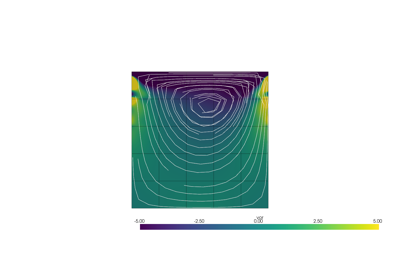

Examples#
Examples of the code.
Steady Examples#
Examples of the code.
Incompressible Navier-Stokes Equation
Incompressible Navier-Stokes Equation
Poisson Equation in the Mixed Formulation
Poisson Equation in the Mixed Formulation


Examples Unsteady#
Examples of the code.

Navier-Stokes: Cavity Flow
Unsteady Heat Equations in Direct Formulation
Unsteady Heat Equations in Direct Formulation
Vector Reaction Equation
Unsteady Heat Equations in Mixed Formulation
Unsteady Heat Equations in Mixed Formulation
Mixed Reaction Equation
Reaction Equation